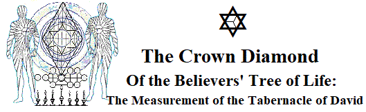

To HaShem: a Dedication
Beyond Jericho
Moon Parable: a Foreword
Jordan, at Harvest Time
Preface for God's Children
Golden Calves
The Churches of Asia
Aside: Three Roads Meet
Ephesus: Arriving at Malkuth
Elders in Retrospect
Smyrna: Handhold at Yesod
Approaching Adam Kadmon
Pergamos: Foothold at Hod-Netsach
The Sephiroth
Thyatira: Resting at Tipareth
The Sephiroth: a Second Look
Sardis: Handhold at Din-Chesed
The Sermon on the Mount
Philadelphia: Foothold at
Binah-Chokmah
Falling Away: Legacy of Adam
Laodicea: Handhold at Kether
The Howl of Whole Palestinia
Selah: the Path to Jordan
Angels on the Rise
The Good Reports
The Scarlet Thread
Caleb's Discernment
Joshua's Vision
Zeal: an Afterword
site
map
site
map